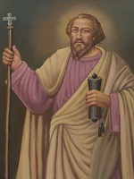

Welcome to the St. Thomas Indian Orthodox Church of Baltimore, Maryland
Our parish celebrated our 10th anniversary on Saturday, May 7th and Sunday, May 8th, 2011. On behalf of the Vicar, Fr. K.P. Varghese, Board of Trustees, Managing Committee, spiritual organizations and the parishioners, it is with great pleasure that we invite all the faithful to our website.
Our Church follows in the great tradition of the Holy Bible and the teachings of the Church Fathers. St. Thomas Indian Orthodox Church is a member of the Malankara Orthodox Syrian Church, which was established in A.D. 52 by St. Thomas, one of the apostles of our Lord.
It has been a long cherished dream to use our Church website as a resource and informative page for the parishioners and those that visit our site. We have been blessed by the intercessory prayers of St. Thomas, the Apostle of India, Our Holy Mother, the Holy Virgin Mary and Mar Gregorios of Parumala and all the Fathers, Mothers, and Saints of the Church.
We hope and pray that this website will be a blessing to those who visit it.